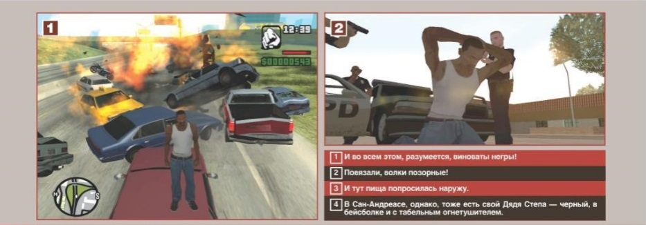

Путь Карлито
История Карла Джонсона (Сиджея для краткости) — главного героя San
Andreas — продается, как и принято в играх от Rockstar North,
с эпическим размахом. Пять лет назад Сиджей сбежал из своего родного
Лос-Сантоса в Либерти-Сити. Теперь из-за смерти матери ему приходится
венуться обратно. Приземлившись в аэропорту, наш герой сразу попадает в
водоворот не очень приятных событий: продажные копы обвиняют его в убийстве
своего коллеги и пытаются привлечь к «сотрудничеству», в
семье разлад и скандалы, бывшая сиджеевская банда потеряла всякое уважение
на улицах и даже родной брат не особо рад встрече.
Что же делать в такой ситуации черному парню, за душой у которого нет
ничего, кроме фамильного сарая-развалюхи на краю одичалого гетто? Жевать
сопли, ныть и напиваться до скотского остояния? Конечно, нет! Карл - тот
персонаж, которым вы никогда и не мечтали стать. Он, неприлично ругаясь,
стискивает зубы, борется с обстоятельствами и, само собой, их побеждает.
В то же время он ни капли не похож на тупоумного среднестатистического
героя комьютерных игр, который привык любую угрозу собственной героичости
встречать ударом сапога — Карл боится продажных копов Тенпенни и
Пуласки (озучивают их, кстати, Сэмюэль Л. Джексон и Крис Пенн),
переживает из-за своего брата и всегда готов прийти на помощь друзьям.
В том куске жизни Сиджея, что показывает San Andreas, столько событий,
что их хватило бы даже не на фильм, а на целый сериал. Этакий «Клан
Сопрано» но про черных.
После шквала критики со стороны цензоров и борцов за нравственность в адрес
Grand Theft Auto: Vice City, можно было ожидать, что Rockstar North
отступится, спрячет жало своего циничного, не знающего пощады юмора
подальше и постарается угодить всем и сразу. Но, к счастью, судебные иски
от разъяренной диаспоры гаитян и вопли защитников детей не устрашали
разработчиков. В San Andreas они нанесли холеному американскому обществу
еще один удар — на этот раз ниже пояса.
Душное гетто, где влачит существование семья Сиджея, холодные и неприступные
небоскребы Сан-Фиерро, манящие огни никогда не слышавшего о морали
Лас-Вентураса — везде и всюду разработчики заботливо выставляют
напоказ самые неприглядные стороны жизни государства под название Соединенные Штаты
Америки. Повальная наркомания, продажные полицейские, несправедливость
властей, уличная проституция грабящие старушек хулиганы, все прелести
жизни для «белых людей» и заплеванные трущобы для остальных —
в этом весь San Andreas.
Что отрадно, показывая «жизнь глазами простого черного парня»,
разработчики при этом умудрились не скатиться к банальному расизму. Если
кто-нибудь скажет вам, что San Andreas — это игра про черных, то
знайте, что он либо просто глуп, либо прошел всего миссии три, не больше.
